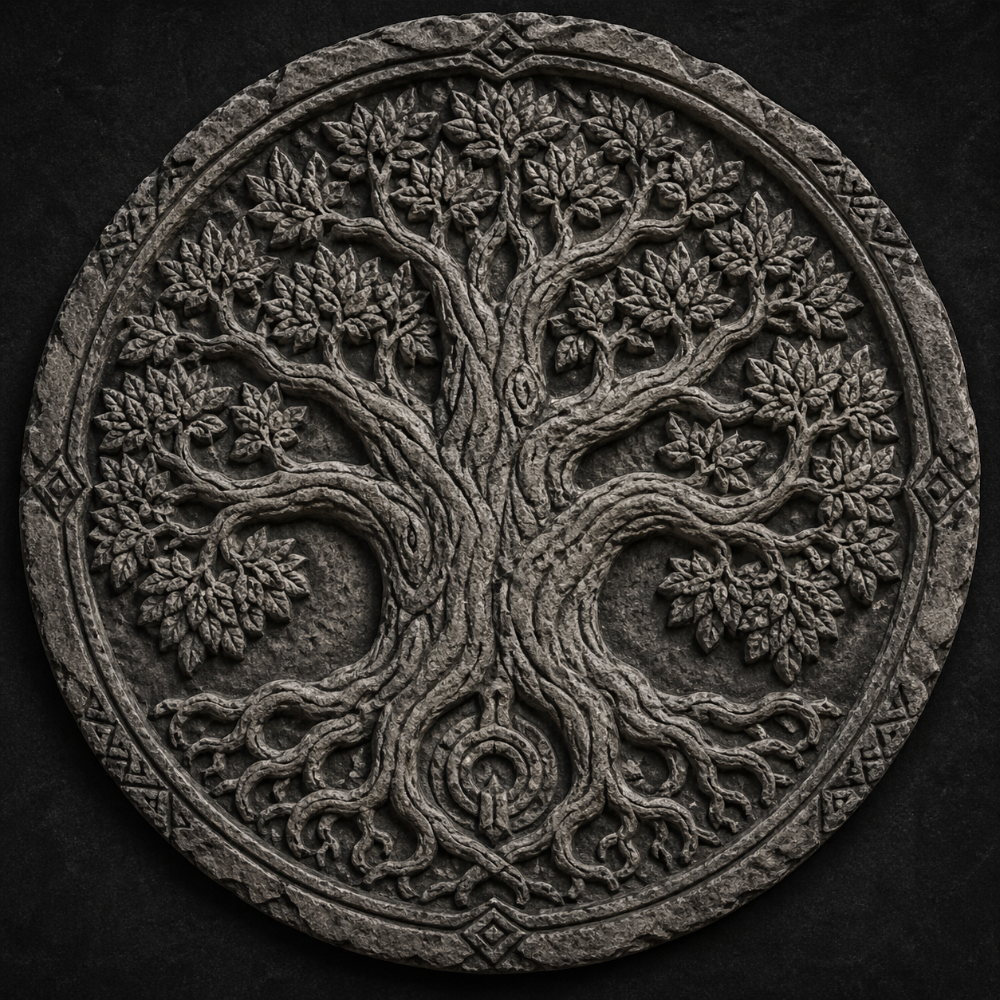
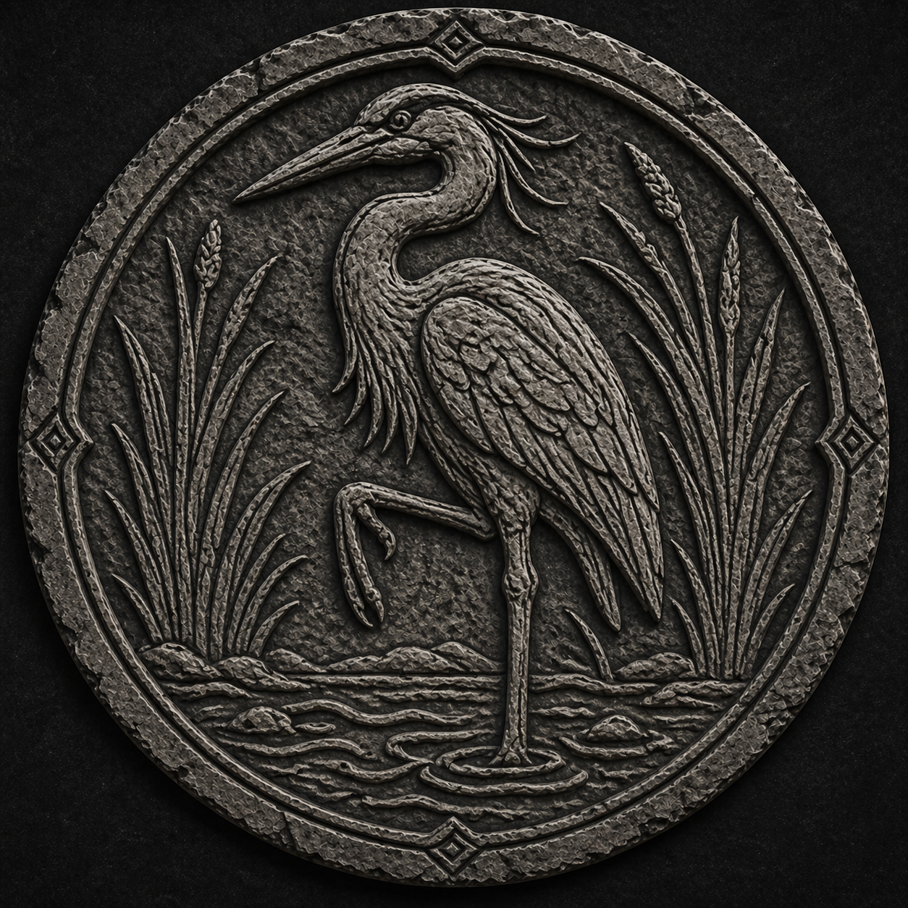
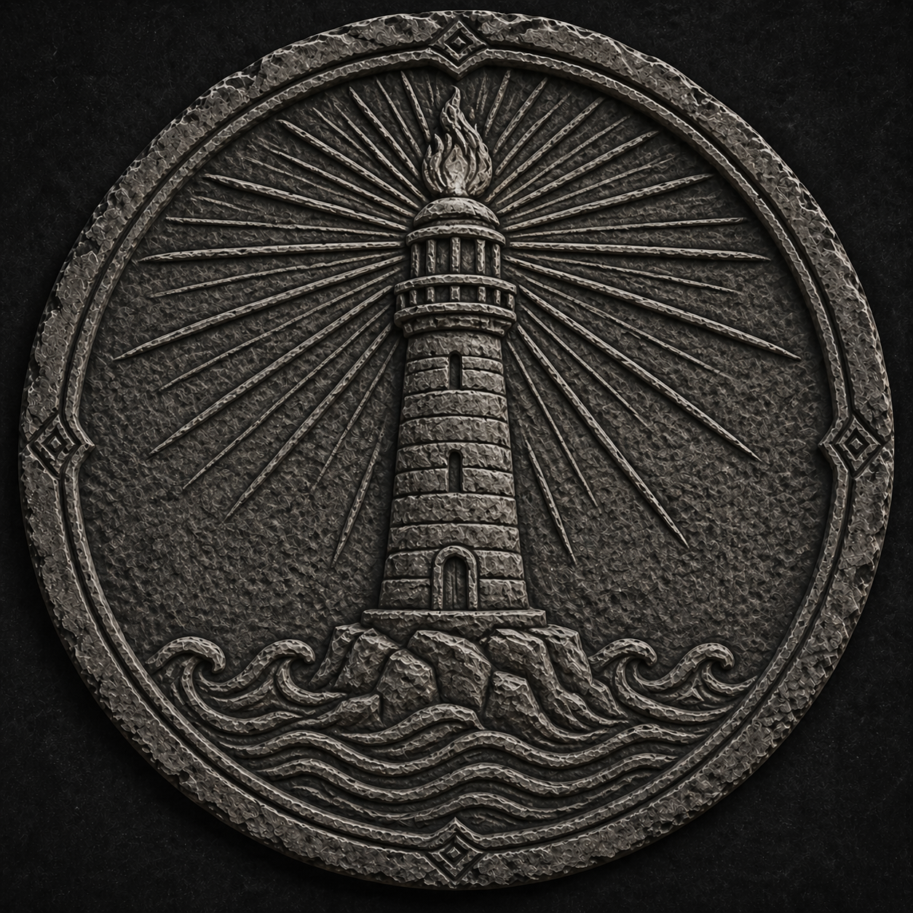

Session 7 — The Sunken Temple
What the crew saw beneath the docks.
The Outer Hall
The Statue in Supplication

The central figure of the Outer Hall. Arms raised, palms up, fingertips outward. The posture of offering — old and deliberate, worn smooth by centuries.
The Statue in Fear

The same figure, on the way out. Something had shifted. Both positions visible at once — the offering and the plea, layered over each other. The ghost field registered fear where it had registered honor.
The Door Chamber
The Compact Door

Pre-Cataclysm stone. Six seals in the arch — three intact, three cracked through. No handle, no keyhole. Others had stopped here. The door did not open for them.
The Three Intact Seals


